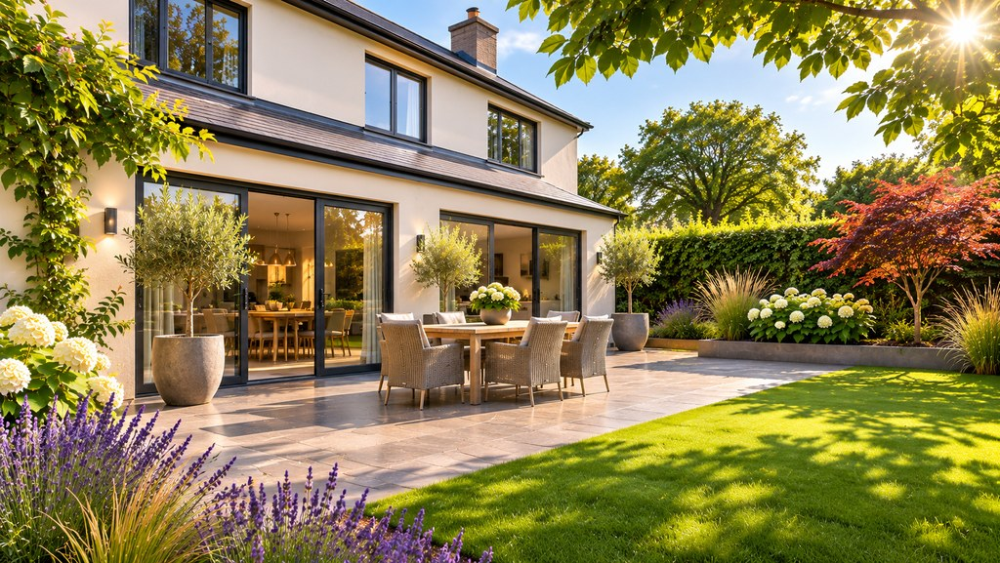

Photograph Image: Superior Pergola Ireland
Superior Pergola Ireland
An Irish installer of aluminium pergolas, verandas, porches and glass enclosures, with photographs, published starting prices and what to ask.
What are you looking for?


Illustrative AI-generated visualisation. Not an actual installation.
What if the space outside your back door became your favourite room?
Make more of the space between your house and your garden.
Illustrative AI-generated visualisation. Not an actual installation.
Most Irish homes already have the space: a terrace or a patio right outside the kitchen doors, used for a handful of warm evenings and left to the rain for the rest of the year.
Give it a roof, a side that closes, light and a little warmth, and the same few square metres become somewhere you sit through a shower, eat on a cool evening and cook when it drizzles. It isn’t a new building at the end of the garden. It’s the room between the house and the garden.
The possibilities
Each starts from the same patio. What changes is how much of the weather it keeps out, how open it stays, and what you’ll use it for.
A fixed roof of glass or polycarbonate on slim posts, fixed to the back wall above the doors: a lean-to veranda.
The covered patio closed in with sliding glass walls on one or more sides, which open right back when the day allows.
A covered area sized around the table, with lighting under the roof and heat for the cooler evenings.
A pergola whose roof louvres tilt, or slide right open, often by remote, so the same space works in sun, shower and wind.
A grill and a prep counter, or a self-contained cooking unit, under a roof right next to the back door.
Illustrative drawings by PlotNua, not to scale and not designs for any home.
Not a building at the end of the garden. The room between the house and the garden.
Built for Irish weather
An outdoor room in Ireland is judged on a wet Tuesday, not a sunny Saturday. These are the parts that decide whether it gets used.
Laminated or toughened safety glass. Clear, quiet in rain and long-lasting. Heavier, so the frame and footings work harder. Clean it with a soft cloth and a pH-neutral cleaner.
Lighter multiwall sheets, clear, opal or tinted. Usually the lower-cost roof, and lets light through without glare. Louder in heavy rain than glass.
Aluminium blades that tilt, and on some systems slide back, usually by motor. Closed, they shed rain into the beam’s gutter; open, they let in sun and air. Moving parts need looking after.
A waterproof fabric roof that folds back on rails. Bright when open, sheltered when closed. Best where shade matters as much as rain, and on less exposed sites.
Powder-coated aluminium needs little more than a wash. Clear leaves from the gutter in the beam each autumn, check the seal along the house wall, keep the sliding rails clean so the panels run freely, and ask how motorised louvres and their sensors are serviced.
Weatherproof isn’t the same as watertight: in driving rain a glass room can let a little water in at the edges. Ask the maker what its system is designed to keep out.
Choosing
Start with what stops you using the patio now: rain, wind, cold, or the dark. Then with how you’d use it.
| Covered Patio | Glass Room | Outdoor Dining Room | Flexible Pergola | Outdoor Kitchen | |
|---|---|---|---|---|---|
| Rain | Kept off overhead | Kept out, sides closed | Kept off overhead | Kept off with louvres closed | Kept off the cook and the grill |
| Wind | Open sides | Sheltered | Add a screen or glass side | Add screens or glass sides | Open, for ventilation |
| Light | Bright under glass | Bright all round | Depends on the roof | From full shade to open sky | Depends on the roof |
| Seasons of use | Spring to autumn | Much of the year | Spring to autumn, longer with heat | Spring to autumn | All year, for the hardy |
| Relative cost | € | €€€ | €€ | €€€€ | €€–€€€ plus the roof |
| Planning class most likely | House extension or garden structure | House extension | House extension or garden structure | Garden structure, if free-standing | Follows the roof over it |
| Best for | A dry seat and a dry route | A room you can sit in on a windy day | Eating outside on cool evenings | Sunny, changeable terraces | Cooking and hosting |
Rain kept off overhead; open sides. Spring to autumn. Relative cost €. Planning: house extension or garden structure. Best for a dry seat and a dry route.
Rain and wind kept out. Much of the year. Relative cost €€€. Planning: house extension. Best for a room you can sit in on a windy day.
Rain kept off; add a screen for wind. Longer seasons with heat. Relative cost €€. Planning: house extension or garden structure. Best for eating outside on cool evenings.
Rain kept off with louvres closed; from full shade to open sky. Relative cost €€€€. Planning: garden structure, if free-standing. Best for sunny, changeable terraces.
Rain kept off the cook; open for ventilation. Relative cost €€–€€€ plus the roof. Planning follows the roof over it. Best for cooking and hosting.
A general comparison, not a rating of any product. Relative cost is a broad guide, before heating, lighting and groundwork. Planning classes are explained, with their limits, in chapter 04.
Planning and building regulations
Often quite a lot, if it stays within the limits. But an outdoor room shares those limits with other things you may already have built, or may want to build.
New exempted-development regulations came into force on 27 July 2026. Two of the changes matter here: a bigger allowance for extending the house, and a bigger allowance for structures in the garden. Which one an outdoor room falls under depends on how it is built and where it stands.
Established
What the regulations say, as amended on 27 July 2026. Every limit applies together, and each comes with further conditions.
Shared with: a kitchen or living-room extension, a conservatory, or a converted garage.
Shared with: a shed, a greenhouse, or a garden room built under the same class.
Confirm individually
How the classes apply to a particular outdoor room is a judgement about its design and position. These are PlotNua’s reading, not legal advice, and councils can reach different views.
| Outdoor room | Most likely treated as | What decides it | How settled |
|---|---|---|---|
| A glass room fixed to the back wall | A house extension (Class 1), like a conservatory | Its floor area counts toward the 45 m², together with any earlier extension; its height is measured against the rear wall | Most likely |
| A roof fixed to the back wall, sides open | A house extension, or an awning or shade under Class 3 | Whether it is read as part of the house or as a structure in the garden | Unsettled: ask your council |
| A free-standing pergola or louvred roof | A structure in the garden (Class 3) | Its area counts toward the shared 30 m²; 3 metres high with a flat roof; behind the front wall. A council found a pergola of about 12 m² behind a house exempt; An Bord Pleanála found a 55 m² pergola was not | Case by case |
| Anything at the side or front of the house | Outside the house-extension exemption | Class 1 covers the rear only, and Class 3 never allows a structure forward of the front wall | Plan for permission |
The exemptions can be lost for a protected structure, in an Architectural Conservation Area, or where a condition of the house’s original planning permission rules them out. Check before anything is ordered.
Any homeowner can ask the council whether a particular proposal is exempted development. The fee is €80, and the council is due to decide within four weeks, unless it asks for more information. Its decision can be referred to An Bord Pleanála.
Planning and building regulations are different questions. A single-storey conservatory, porch, carport or covered area added to a house is exempt from the Building Regulations up to 23 m² and 3 metres high (4 metres with a pitched roof). Larger work, and electrics, gas and drainage in any case, must still be done properly by competent trades.
PlotNua can’t tell you whether a particular outdoor room at your home is exempt from planning permission, and no maker’s general statement can either: the tests are about its size, position, height and what is already built. Last checked 4 November 2026 against the regulations as amended on 27 July 2026.
Meet the makers
Outdoor rooms are made to measure and fitted by specialist installers. Explore them yourself, or let PlotNua do the homework.
Your next step
Explore the makers yourself
See a maker’s range, photographs and published prices on PlotNua, read about the other installers we have researched, and take our questions to anyone you talk to.
Let PlotNua do the homework
Tell us about the space and how you’d use it. We’ll help you settle the roof, the sides and the size and, only if you say yes, introduce you to a suitable maker.
Free for homeowners.
Start your message with the reference OR so we know it’s about The Outdoor Room. Prefer email? Use our contact page and mention “OR”.
PlotNua doesn’t sell or install outdoor rooms and can’t confirm what your home allows; that needs a site visit. Nothing is ordered or paid for by sending a message.
A showcase on PlotNua
Photograph Image: Superior Pergola Ireland
An Irish installer of aluminium pergolas, verandas, porches and glass enclosures, with photographs, published starting prices and what to ask.
Superior Pergola Ireland applies a 4% saving to aluminium pergola installations introduced through PlotNua. It doesn’t apply to verandas, porches or its other products. The conditions are on its showcase.
These installers supply and fit outdoor rooms in Ireland. PlotNua has researched what they publish; they are listed for information only.
Showrooms in Dublin, Cork, Galway and Carlow
Aluminium verandas with glass or polycarbonate roofs, opening louvred and retractable roofs, and glass rooms made with sliding glass doors, fitted by its own teams. It publishes no prices; quotes follow a measure-up.
Showroom in Goatstown, Dublin 14
Glass-roof verandas, louvred and retractable pergolas from European brands, self-build kits and outdoor kitchens. It installs verandas nationwide, and other structures mainly around Dublin.
Based in Galway
Bespoke aluminium verandas with glass, polycarbonate or insulated roofs, louvred pergolas, sliding glass walls, BBQ pods and outdoor heaters, installed by its own team.
What makers advertise
From €2,500 to €21,000 and more.
Examples PlotNua found, not quotes: Superior Pergola Ireland publishes starting prices, including fitting, of €2,500 for a pergola and €8,100 for a veranda; The Outdoor Scene shows an estimated price of €21,000 for a motorised louvred roof; an outdoor kitchen unit there is €10,895–€12,795, plus about €1,000–€1,200 for delivery and installation. VAT treatment isn’t always stated. Advertised figures, checked 4 November 2026.
Descriptions and prices come from the businesses’ own published pages, checked on 4 November 2026. PlotNua may receive a referral fee from Superior Pergola Ireland if you go ahead after a PlotNua introduction; it is paid by the supplier, and it does not decide which suppliers PlotNua shows or how. Inclusion here is not a recommendation. PlotNua has no commercial relationship with the other installers named here, none is a PlotNua partner, and PlotNua doesn’t sell or install outdoor rooms. No photographs from those installers are shown.
Last checked 4 November 2026. PlotNua is an independent discovery platform. The planning summary is general information, not legal advice. The terrace images on this page are AI-generated illustrations, not photographs of a real installation; the drawings are simplified PlotNua illustrations, not to scale.
Whoever you talk to, these questions help you compare like with like.
Related possibilities